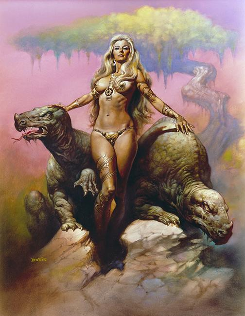
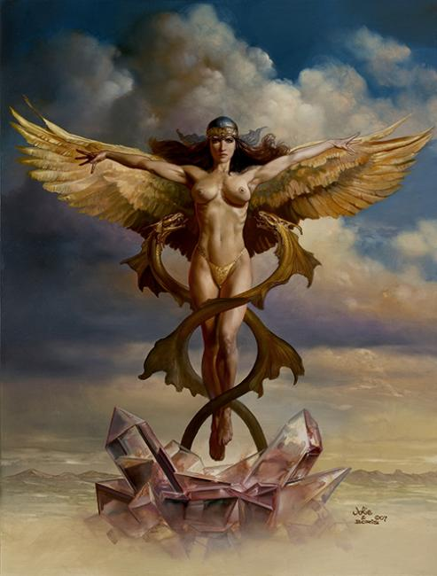
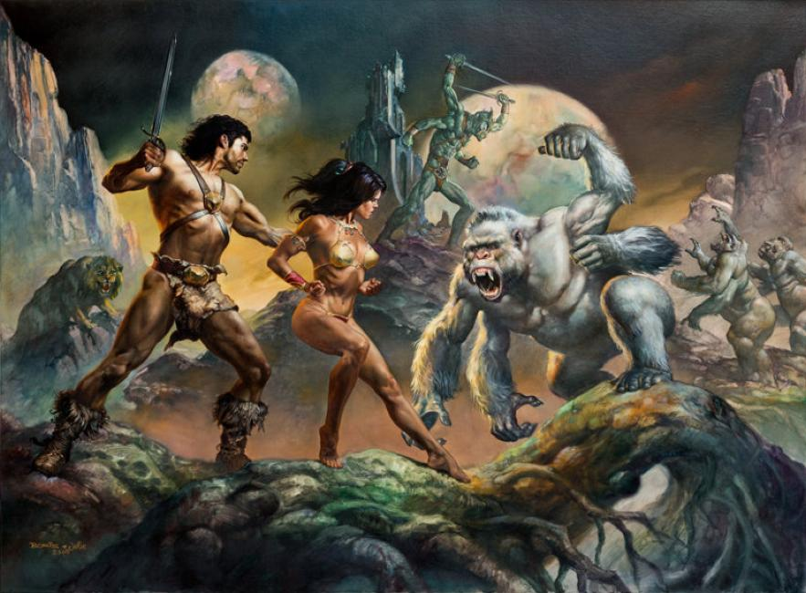
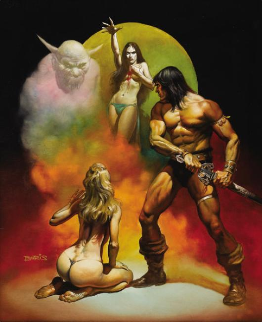
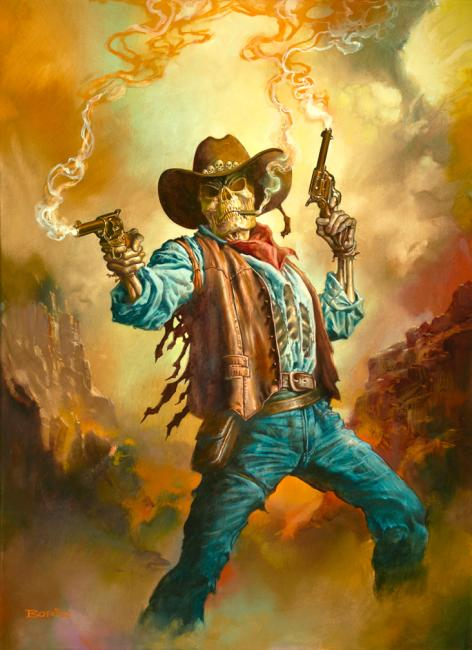
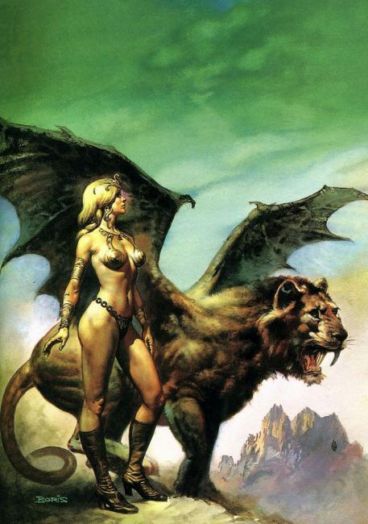
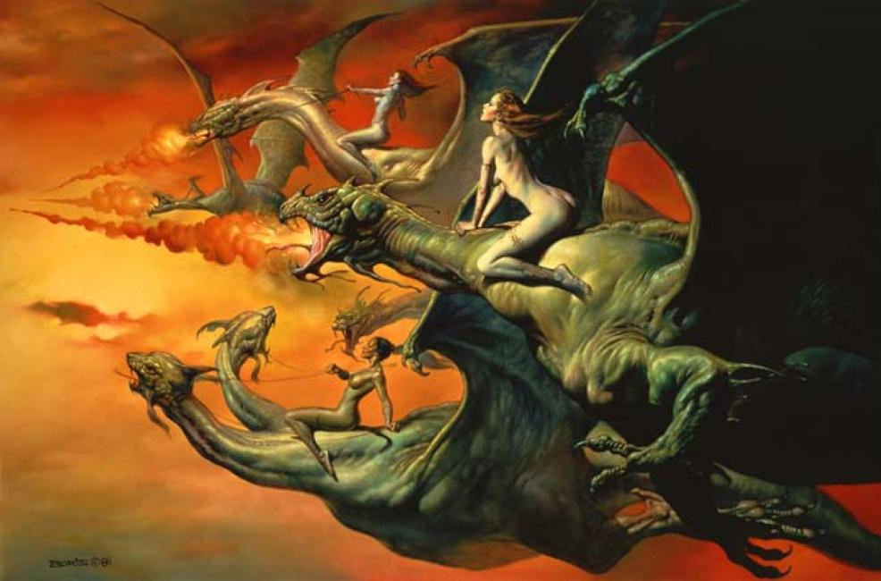
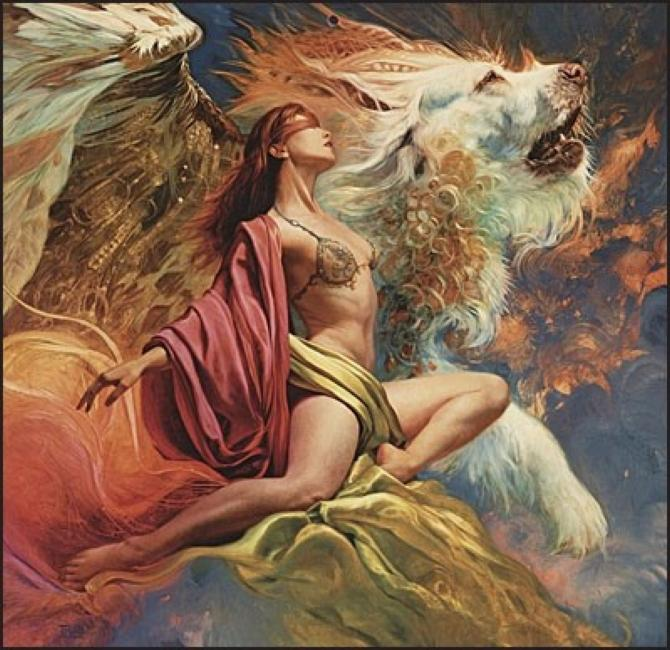

×








❮
❯
Boris Vallejo (born January 8, 1941) is a Peruvian painter that works almost exclusively in the fantasy and erotica genres. His hyper-representational paintings have appeared on the covers of numerous science fiction and fantasy paperbacks and are featured in a series of best-selling glossy calendars. Subjects of his paintings are typically sword and sorcery gods, monsters, and well-muscled male and female barbarians engaged in battle.
Vallejo's published works include:
The Fantastic Art of Boris Vallejo (1980)
Mirage (1982, reprinted 1996 and 2001)
Enchantment. Stories By Doris Vallejo, Illustrated by Boris Vallejo (1984)
Fantasy Art Techniques (1985)
Ladies: Retold Tales of Goddesses and Heroines. By Boris and Doris Vallejo (1992)
Bodies: Boris Vallejo: Photographic Art (1998)
Dreams: The Art of Boris Vallejo (1999)
Titans: The Heroic Visions of Boris Vallejo and Julie Bell (2000)
Sketchbook (2001)
Twin Visions (2002)
Fantasy Workshop: A Practical Guide (with Julie Bell) (2003)
Boris Vallejo and Julie Bell: The Ultimate Collection (2005)
The Fabulous Women of Boris Vallejo and Julie Bell (2006)
Imaginistix (2006)